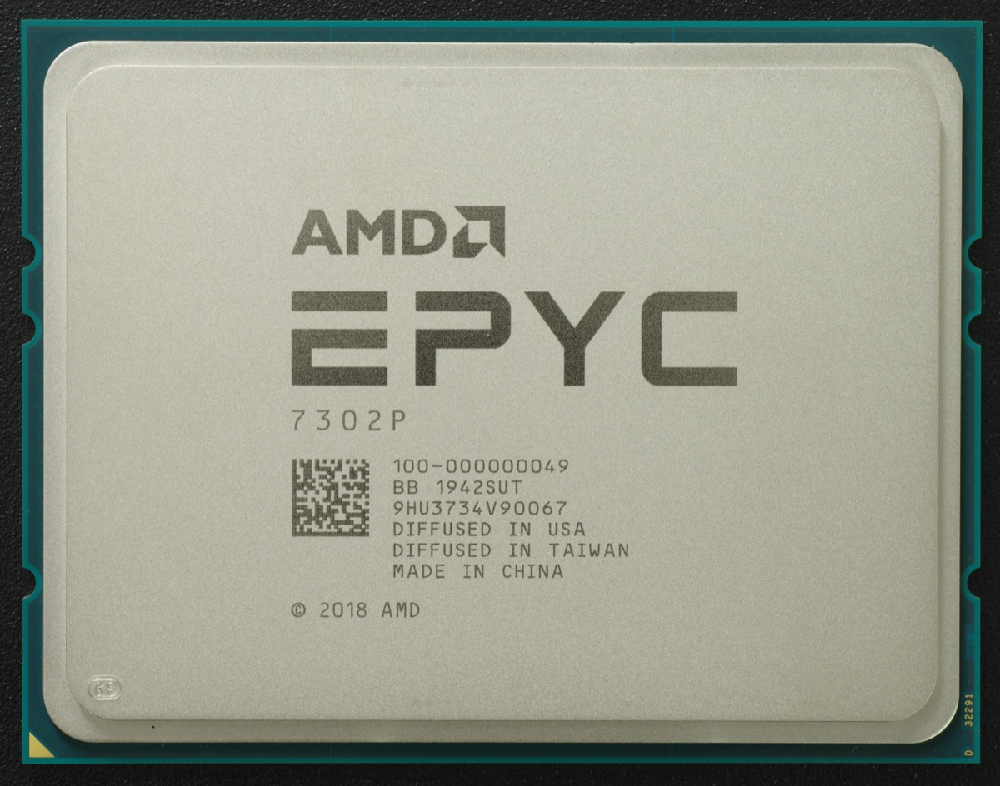

Executive Summary
이 글은 앤트로픽이 9월 24일 아카마이와 맺은 클라우드 계약을 읽는다. 금액은 7년간 116억 달러이고, 앤트로픽이 90억 달러를 더 약정하면 총액은 약 206억 달러가 된다. 아카마이 역사상 최대 규모이고, 넉 달 전 같은 두 회사가 맺었던 18억 달러짜리 계약의 여섯 배가 넘는다. 확정된 매출이 아니라 조건이 붙은 약정이라는 점은 뒤에서 따로 짚는다. 그런데 이 계약서에서 성격을 정하는 대목은 금액이 아니라 한 낱말이다. 아카마이는 이 돈이 앤트로픽의 'CPU 워크로드' 수요를 받기 위한 것이라고 적었다. 모델을 학습시키는 가속기 쪽이 아니라, 코드를 돌리고 웹을 여는 범용 칩 쪽이다.
규모를 가늠하려면 같은 회사의 다른 계약을 옆에 놓아야 한다. 앤트로픽은 올해 4월에만 구글·브로드컴과 여러 기가와트, 아마존과 최대 5기가와트 규모의 설비를 약속했다. 전부 클로드를 학습시키고 내보내는 가속기 이야기다. 반면 아카마이가 투자자에게 밝힌 소요 전력은 올해 서명한 클라우드 계약을 모두 합쳐 95~105메가와트다. 금액은 조 단위로 커졌는데 전력은 0.1기가와트 언저리에 머문다. 다만 아카마이는 앤트로픽이 이 자원으로 정확히 무엇을 할지 밝히지 않았고, 그 공백이 이 계약을 두고 나오는 모든 해석의 전제다.
1절부터 3절까지는 공개된 계약 문서와 투자자 설명, 보도에 적힌 내용이다. 4절은 거기서 이 글이 끌어낸 해석이다.
주요 수치
출처: 아카마이 보도자료(2026-09-24)와 같은 날 투자자 설명, 테크크런치 보도.
116억 달러
7년간의 약정 금액
앤트로픽이 90억 달러를 더 약정하면 총액이 약 206억 달러가 된다. 아카마이 창사 이래 최대 계약이다
95~105MW
아카마이 클라우드 계약 전체의 소요 전력
이번 건을 포함해 올해 서명한 계약을 모두 합친 값이다. 앤트로픽이 아마존과 약속한 최대 5기가와트의 50분의 1 수준이다
2027년 하반기
매출이 시작되는 시점
2026년 매출 기여는 없다. 2027년 1억 5,000만~3억 달러를 거쳐 2028년 말에 연 17억 달러 수준으로 올라선다
약 5%
앤트로픽이 받은 신주인수권 상한
행사가는 주당 111.33달러다. 지금 약 2%가 확정되고, 30억 달러를 더 약정할 때마다 약 1%씩 붙는다
돈은 아카마이로 가고 지분은 앤트로픽으로 온다
아카마이는 9월 24일 앤트로픽과 7년간 116억 달러 규모의 클라우드 계약을 맺었다고 발표했다. 같은 날 투자자 설명이 함께 열렸고, 테크크런치는 다음 날 이 계약을 보도했다. 아카마이가 창사 이래 서명한 가장 큰 계약이고, 앤트로픽이 계약 기간 안에 90억 달러를 더 약정하면 총액은 약 206억 달러까지 늘어난다.
두 회사가 처음 거래하는 것은 아니다. 아카마이는 5월 실적 발표에서 어느 선도 모델 기업과 7년 18억 달러 계약을 맺었다고만 밝혔고, 상대가 앤트로픽이라는 사실은 이튿날 블룸버그 보도로 알려졌다. 이번 건은 그때의 5월 5일자 기본계약서에 프로젝트 계획 두 개를 더한 것이고, 서명은 9월 18일에 끝났다. 넉 달 사이에 같은 관계가 여섯 배 남짓이 됐다.
AI 인프라 계약에서 익숙한 그림은 인프라를 파는 쪽이 AI 회사에 투자하는 것이다. 이번에는 방향이 반대로 서 있다. 아카마이가 앤트로픽에 신주인수권을 줬다. 의결권 없는 전환우선주를 살 수 있는 권리이고, 보통주로 바꾸면 770만 주, 발행주식의 약 5%에 해당한다. 행사가는 주당 111.33달러다. 이번 116억 달러 약정으로 약 2%가 확정되고, 남은 약 3%는 앤트로픽이 30억 달러씩 더 약정할 때마다 1%씩 붙는다. 돈을 쓰는 쪽이 돈을 받는 회사의 지분을 쌓아 가는 구조다.
돈이 들어오는 쪽의 숫자는 조금 더 뒤에 있다. 아카마이는 이 약정에 필요한 설비에 2년에 걸쳐 약 55억 달러를 쓸 계획이다. 올해 매출에는 기여가 없다. 매출은 2027년 하반기에 시작해 그해 1억 5,000만~3억 달러가 되고, 2028년 말에 완전 가동에 이른 뒤로는 연 17억 달러 수준에서 유지된다. 최고재무책임자는 설비를 인도하기만 하면 대금이 보장되는 구조라 완전 가동 이후에는 매출이 흔들리지 않는다고 설명했다. 발표 직후 시간외 거래에서 아카마이 주가는 최대 17% 올랐고, 이튿날 정규장은 125달러 위에서 열렸다가 113.94달러로 닫아 상승폭이 3.2%로 줄었다.
다만 116억 달러는 확정된 금액이 아니다. 증권거래위원회 제출 문서는 이 약정이 아카마이의 인도 요건과 서비스 가용성 요건 충족을 전제로 한다고 적었고, 앤트로픽 쪽에는 시정되지 않은 중대한 위반과 직접 경쟁사로의 경영권 이전, 중대한 장애 통지라는 해지 사유를 뒀다. 최고재무책임자는 신주인수권의 공정가치도 계약 기간에 걸쳐 매출에서 빼며 그 차감분이 116억 달러 안에 이미 들어 있다고 설명했다. 한 고객에 쏠린다는 지적 역시 나왔다. 올해 서명한 다년 계약 144억 달러는 이번 116억 달러에 다른 기업들과 맺은 28억 달러를 더한 값인데, JP모건은 그중 앤트로픽 몫을 93%로 보고 투자의견을 중립에 뒀다.
여기까지는 금액 이야기다. 계약의 성격을 정하는 문장은 따로 있다. 아카마이 보도자료는 이 계약을 앤트로픽의 'CPU 워크로드' 증가를 대규모로 뒷받침하기 위한 것이라고 적었고, 최고재무책임자는 투자자 설명에서 더 짧게 못 박았다. 이 건은 CPU라는 것이다. 같은 자리에서 그는 올해 서명한 클라우드 계약 144억 달러어치 전체에는 CPU도 GPU도 섞여 있다고 덧붙였다. 이번 건만 따로 떼어 CPU라고 부른 셈이다.
같은 회사의 다른 계약서는 기가와트로 적혀 있다
116억 달러가 큰 금액인지 아닌지는 옆에 무엇을 놓느냐에 따라 달라진다. 앤트로픽은 올해 봄에도 설비 계약을 두 건 발표했다. 4월 6일에는 구글·브로드컴과 2027년부터 들어오는 여러 기가와트 규모의 차세대 TPU 설비를 약속했고, 4월 20일에는 아마존과 최대 5기가와트를 약속했다. 아마존 쪽 발표에는 이미 트레이니엄2 칩 100만 개 이상으로 클로드를 학습시키고 서비스하고 있다는 설명도 들어 있다. 이 계약들은 전력과 칩 개수로 적힌다.
아카마이 쪽 숫자는 단위가 다르다. 최고재무책임자는 올해 서명한 클라우드 계약을 모두 합쳐 필요한 전력이 95~105메가와트일 것으로 본다고 말했다. 그 계약들이 완전 가동되면 연 22억 달러 매출이 나오니, 전력 1메가와트당 연 2,200만 달러꼴이다. 앤트로픽 계약이 그 안에서 가장 큰 몫이지만, 전체를 다 합쳐도 0.1기가와트 언저리다.
이 대비를 과장하면 안 된다. 메가와트는 돈이 아니고, 95~105메가와트는 앤트로픽 계약만의 값도 아니다. 가속기는 같은 면적에서 훨씬 많은 전기를 먹으니 전력만 놓고 보면 벌어지는 것이 당연하다. 최고재무책임자도 같은 자리에서 이 건은 CPU라 전력 효율이 좋고, CPU는 같은 전력에 훨씬 많이 담기니 메가와트당 매출이 대체로 더 나온다고 말했다. 그래도 방향은 분명하다. 앤트로픽이 모델을 키우려고 맺은 계약은 기가와트로 세고, 이번 계약은 그 50분의 1쯤 되는 전력 안에서 7년간 116억 달러를 쓴다. 두 계약이 같은 종류의 설비를 사는 것이라면 나오기 어려운 비율이다.
장비를 다루는 조항도 같은 방향을 가리킨다. 아카마이 최고재무책임자는 계약 기간 동안 장비를 교체하거나 성능을 올려 줄 의무가 계약에 없다고 밝혔다. 7년은 짧은 기간이 아니다. 범용 칩은 세대가 바뀌어도 하던 일을 계속하지만, 학습용 가속기는 한 세대만 밀려도 쓸모가 크게 달라진다. 7년 동안 갈아 끼울 의무가 없는 설비라면, 그 안에 들어갈 물건의 종류도 좁혀진다.
앤트로픽 스스로는 이런 구분을 이미 말로 해 두었다. 4월 구글·브로드컴 발표문에 여러 하드웨어를 함께 쓰는 이유가 나온다. 워크로드를 거기에 가장 맞는 칩에 붙일 수 있다는 것이다. 그 문장을 이번 계약에 대면 읽는 방향이 하나로 좁혀진다. 아카마이에서 사는 것은 '가장 맞는 칩'이 가속기가 아닌 작업이다.
에이전트가 하루 종일 하는 일에는 곱셈이 없다
에이전트가 하루 동안 하는 일을 늘어놓으면 이렇다. 파일을 연다. 명령을 실행한다. 출력이 나올 때까지 기다린다. 결과를 보고 다음에 무엇을 할지 정한다. 웹 페이지를 연다. 형식이 맞지 않으면 고쳐서 다시 시도한다. 이 목록에 행렬 곱셈은 한 줄도 없다.
모델이 다음 낱말을 고르는 연산은 가속기가 잘하는 일이다. 같은 계산을 한꺼번에 수만 번 해야 하기 때문이다. 반면 위 목록은 분기와 대기로 이뤄져 있다. 조건을 보고 갈라지고, 다른 시스템의 응답을 기다리고, 짧은 작업을 순서대로 처리한다. 이런 일은 범용 칩이 맡는다. 테크크런치가 이 계약을 설명하며 쓴 문장도 같은 이야기다. 코드를 돌리고 웹을 여는 일을 맡는 범용 칩 수요가 AI 에이전트가 더 많은 일을 떠맡으면서 늘었다는 것이다.

테크크런치가 그 대목에 달아 둔 링크를 따라가면 8월 IEEE 스펙트럼 기사가 나오고, 거기서는 같은 이야기를 만드는 쪽 사람들의 말로 확인할 수 있다. 인텔의 한 연구자는 에이전트 작업의 상당 부분이 원래 범용 칩이 하던 일이라며 목록을 든다. 출력을 해석하고, 어떤 도구를 부를지 정하고, API를 호출하거나 코드를 돌리고, 결과를 모아 모델에 다시 넣는 일이다. AMD의 한 임원은 자사 시험에서 현실적인 에이전트 파이프라인 여덟 단계 가운데 일곱이 전부 범용 칩에서 돌았다고 말한다.
조지아공대 연구진은 범용 칩이 어디서 발목을 잡는지를 두 군데로 나눠 짚는다. 범용 칩의 코어가 모자라면 가속기에 일을 넘기는 속도가 밀려 가속기 쪽이 멈춰 서서 기다린다. 글을 토큰으로 쪼개는 작업도 범용 칩 몫인데, 도구를 한 번 부를 때마다 그때까지 쌓인 문장을 통째로 다시 쪼개야 한다. 10만 토큰이 쌓인 대화에 1,000토큰짜리 결과가 하나 붙으면 10만 1,000토큰을 처음부터 다시 센다는 뜻이다. 에이전트는 이 일을 하루에 수백 번 한다.
압박은 이미 시장에 나와 있다. 아마존웹서비스는 올해 초 엔지니어들에게 범용 칩의 연산 시간을 무슨 수를 써서라도 아끼라는 지침을 내렸고, 인텔은 서버용 칩 물량이 올해 말까지 동났다. 앤트로픽이 7년치를 한꺼번에 묶어 두고 아카마이가 메모리부터 선매입에 들어간 배경이 여기에 있다.
다만 이 설명을 그대로 결론으로 옮기기 전에 걸어 둘 단서가 셋 있다.
- • 용도는 공개되지 않았다. 아카마이는 앤트로픽이 이 자원으로 무엇을 할지 밝히지 않았고, 앤트로픽도 따로 설명을 내놓지 않았다. 에이전트 수요와의 연결은 계약서가 아니라 업계 배경에서 나온 읽기다.
- • 범용 칩을 처음 사는 것도 아니다. 아마존과 맺은 계약에는 트레이니엄 계열만이 아니라 아마존의 범용 칩인 그래비톤도 들어 있다. 새로운 것은 범용 칩을 산다는 사실이 아니라, 범용 칩이 116억 달러짜리 계약의 이름표가 됐다는 점이다.
- • 가속기 수요가 줄었다는 뜻은 아니다. 모델이 답을 만드는 연산 자체는 여전히 가속기 몫이고, 앤트로픽의 기가와트급 계약은 이번 발표보다 다섯 달 앞서 맺어졌다. 이번 계약이 받는 것은 그 연산의 앞뒤에서 벌어지는 일이다.
그렇다면 아카마이는 무엇을 파는가. 보도자료는 이 설비를 분산형 AI 인프라와 소프트웨어라고 부른다. 아카마이는 콘텐츠를 사용자 가까이에 두어 전송 거리를 줄이는 회사로 자랐고, 클라우드 사업도 한곳에 몰린 초대형 캠퍼스보다는 여러 곳에 흩어진 형태에 가깝다. 대표는 투자자 설명에서 130개국 700개 도시에 4,000곳이 넘는 거점을 들었고, 최고재무책임자는 이번 100메가와트도 직접 짓지 않고 코로케이션 사업자 여럿과 지역마다 10~30메가와트씩 나눠 모은다고 했다.
대표는 앞으로 더할 기능도 열거했다. 에이전트 샌드박스와 보안, AI 게이트웨이, 지능형 오케스트레이션을 들고 그 목표를 이렇게 요약했다. 작업마다 가장 값싼 하드웨어에서 돌리되 기동 시간을 줄이고 사용자와 데이터까지의 지연을 낮추겠다는 것이다. 앤트로픽이 왜 여기를 골랐는지는 여전히 양쪽 다 말하지 않았다. 다만 파는 쪽이 무엇을 팔 작정인지는 공개된 자리에 이미 적혀 있다.
페블러스가 이 계약을 주목하는 이유
지금부터는 이 계약을 데이터를 다루는 사람의 눈으로 본다.
회사에서 AI 비용을 정리한 문서를 열어 보면 대개 한 줄이다. 모델 호출료. 토큰 단가에 예상 호출 수를 곱한 값이 거기 적혀 있다. 모델을 직접 학습시키지 않는 회사라면 이 계산이 틀린 것은 아니다. 문제는 에이전트를 붙이는 순간 늘어나는 것이 토큰만이 아니라는 데 있다.
에이전트를 한 번 돌리면 그 뒤에서 작업 공간이 하나 떠서 명령을 받고, 파일이 열리고, 사내 시스템에 질의가 나가고, 응답이 오기를 기다리고, 형식이 맞지 않으면 같은 일이 반복된다. 이 시간의 대부분은 연산이 아니라 대기다. 무엇을 기다리는가. 데이터에 닿는 데 걸리는 시간이다. 앤트로픽이 자기 설비를 두 종류로 갈라 사는 것과, 회사가 AI 비용을 두 항목으로 적는 것은 같은 구분 위에 있다.

데이터가 어디에 있는지, 어떤 형식인지, 누가 열어도 되는지가 정리돼 있지 않으면 에이전트는 매번 같은 탐색을 처음부터 다시 한다. 사람은 두 번째부터 기억하지만, 에이전트는 그 기억을 누가 만들어 주지 않으면 갖지 못한다. 그리고 그 반복은 품질 문제의 얼굴로 오지 않는다. 실행 시간이 길어지고, 재시도가 늘고, 켜 둔 자원이 늘어난 청구서로 먼저 온다. 데이터 준비는 정확도 이전에 비용 항목이다.
페블러스가 앞서 살핀 이야기들도 같은 자리에 모인다. 데이터가 커질수록 검색 비용이 거듭제곱으로 늘어난다는 계산을 한 번 다뤘고, AI가 쓰는 연산을 전기처럼 사고팔 수 있는지도 따로 살폈다. 데이터센터가 예정보다 늦어질 때 그 비용을 누가 무는지도 들여다본 적이 있다. 셋이 겹치는 자리는 하나다. AI 비용은 모델 안에서만 자라지 않는다.
그래서 이 계약에서 자기 조직으로 돌아올 때 들고 갈 질문은 세 개면 충분하다.
- • 올해 AI 예산 문서에서 모델을 만드는 비용과 모델에게 일을 시키는 비용이 같은 줄에 적혀 있는가.
- • 에이전트가 한 번 돌 때 모델 호출료 말고 무엇이 더 나가는지 실제로 세어 본 적이 있는가.
- • 에이전트가 같은 데이터를 며칠에 몇 번 다시 찾고 있는가. 그 횟수를 줄이는 일은 누구 담당인가.
여기까지 읽어 주셔서 감사하다. 이 글이 인용한 문서는 아카마이 보도자료와 증권거래위원회 제출 자료, 그리고 테크크런치 보도에서 직접 볼 수 있다. 여러분의 조직에서 올해 AI 예산 문서를 열어 두 비용이 구분돼 있는지 확인해 보시고, 무엇이 빠져 있었는지 이야기를 나눠 주시면 좋겠다.
참고문헌
공식 문서
- 1.Akamai Technologies, Inc. (2026). "Akamai Announces $11.6 Billion Multi-year Agreement with Anthropic to Support Growing Demand." Akamai Newsroom, 2026-09-24.
- 2.Akamai Technologies, Inc. (2026). "Form 8-K, Exhibit 99.1." U.S. Securities and Exchange Commission EDGAR, 2026-09-24.
업계 보도
- 3.Mehta, A. (2026). "Anthropic to pay Akamai $11.6 billion over seven years in cloud deal." TechCrunch, 2026-09-25.
- 4.Smith, M. S. (2026). "The CPU Comeback Is Upon Us." IEEE Spectrum, 2026-08-16.